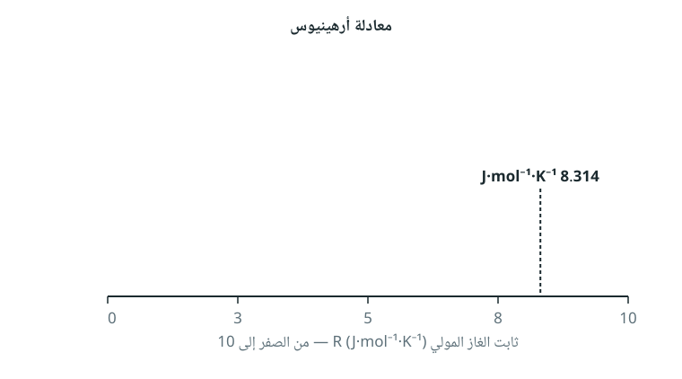

معادلة أرهينيوس
Arrhenius equation
معادلة أرهينيوس تربط ثابت سرعة التفاعل الكيميائي بدرجة الحرارة عبر طاقة تنشيط: يزداد الثابت أُسّياً بزيادة الحرارة، ويتضاعف تقريباً كل عشر درجات في التفاعلات النموذجية.
معادلة أرهينيوس تصف اعتماد ثابت سرعة التفاعل k على درجة الحرارة المطلقة T: k = A·exp(−E_a/(R·T))، حيث A عامل ما قبل الأُسّي وE_a طاقة التنشيط وR ثابت الغاز المولي. المعنى الفيزيائي أن التفاعل لا يحدث بمجرد تصادم الجزيئات، بل يحدث فقط حين يحمل التصادم طاقة تكفي لتجاوز حاجز التنشيط. ورفع درجة الحرارة يزيد نسبة الجزيئات التي تتجاوز الحاجز زيادة أُسّية لا خطية. مثال: تفاعل بطاقة تنشيط 50 kJ/mol عند 300 K له ثابت سرعة k₁؛ وعند 310 K يصبح k₂ = k₁·exp[(E_a/R)(1/300 − 1/310)] ≈ 1.91·k₁، أي أن السرعة تكاد تتضاعف لعشر درجات فقط.
كيف تعمل الظاهرة؟
في أي تفاعل كيميائي تمرّ الجزيئات المتفاعلة بحالة انتقالية عالية الطاقة قبل أن تصير نواتج. والفرق بين طاقة هذه الحالة الوسطى وطاقة المتفاعلات هو طاقة التنشيط. وتوزيع الطاقات الحركية للجزيئات عند التوازن الحراري يتبع توزيع ماكسويل-بولتزمان، وفيه تكون نسبة الجزيئات التي تتجاوز طاقة معيّنة متناسبة مع exp(−E/k_BT). فإذا ارتفعت الحرارة، اتسع ذيل التوزيع عند الطاقات العالية، فزاد عدد الجزيئات القادرة على تجاوز الحاجز زيادة أُسّية. هذا هو أصل الشكل الأُسّي: ليس الحرارة «تسرّع» الجزيئات فقط، بل تغيّر شكل التوزيع فتضاعف نسبة المؤهّلين للتجاوز.
العلاقة بالأرقام
k = A·exp(−E_a/(RT)). وبأخذ اللوغاريتم: ln k = ln A − E_a/(R·T)، وهي معادلة خط مستقيم بين ln k و1/T ميله −E_a/R. ومنها تُستخرج E_a من قياسين: E_a = R·ln(k₂/k₁)/(1/T₁ − 1/T₂). مثال عددي: E_a = 50 000 J/mol، T₁ = 300 K، T₂ = 310 K → ln(k₂/k₁) = (50 000/8.314 462 618)(1/300 − 1/310) = 6013.6 × 1.0753×10⁻⁴ = 0.6466، ومنه k₂/k₁ = 1.909. وقاعدة تقريبية شائعة: التفاعل ذو E_a نحو 50 kJ/mol يتضاعف ثابته كل عشر درجات قرب حرارة الغرفة.
مفاهيم متقاربة
يُفرَّق بين أرهينيوس وقانون السرعة: قانون السرعة r = k·[A]^m·[B]^n يحدد أثر التراكيز، وأرهينيوس يحدد أثر الحرارة على k. ويُفرَّق بين طاقة التنشيط وحرارة التفاعل: الأولى حاجز بين المتفاعلات والحالة الانتقالية، والثانية فرق بين المتفاعلات والنواتج. ويُفرَّق بين أرهينيوس ونظرية الحالة الانتقالية (إيرينغ): إيرينغ تعطي k = (k_BT/h)·exp(−ΔG‡/RT) وفيها اعتماد خطي إضافي على T في العامل الأمامي، وأرهينيوس تفترض A ثابتاً تقريباً. وأخيراً يُفرَّق بين E_a الظاهرية والحقيقية: في التفاعلات المركّبة يكون الميل المقيس مزيجاً من حواجز عدة خطوات.
حدود التطبيق
المعادلة صالحة لتفاعلات ذات حاجز واحد بسيط، وتنحرف حين تكون الخطوة المحددة للسرعة مركّبة من خطوات عدة. ولا تصف التفاعلات الانفجارية أو التفاعلات ذات التحفيز المتغيّر، حيث يتغير A نفسه بالحرارة. وفي التفاعلات ذات الانتشار المحدود — كما في المحاليل اللزجة أو داخل المسام — تصبح السرعة محدودة بانتقال الكتلة لا بالحاجز، فيقلّ اعتمادها على الحرارة ويظهر ميل ظاهري صغير. كذلك لا تنطبق عند درجات قريبة من تغيّر طور المتفاعلات، ولا على التفاعلات الإنزيمية عند حرارة تُفسد الإنزيم، حيث تهبط السرعة بعد ذروة لأن البروتين يفقد بنيته.

| الكمية | القيمة | المصدر |
|---|---|---|
| ثابت الغاز المولي R | 8.314 462 618 J·mol⁻¹·K⁻¹ | [1] |
| نسبة k₂/k₁ لعشر درجات عند E_a = 50 kJ/mol | 1.909 بلا وحدة | [1] |
المصادر
- 1 CODATA Value: molar gas constant — NIST — CODATA 2022 recommended values (2024). physics.nist.gov/cgi-bin/cuu/Value?r · اطُّلع عليه 2026-11-21
- 2 CODATA Value: Boltzmann constant — NIST — CODATA 2022 recommended values (2024). physics.nist.gov/cgi-bin/cuu/Value?k · اطُّلع عليه 2026-11-21
- 3 The International System of Units (SI), 9th edition (2019) — BIPM — Bureau International des Poids et Mesures (2019). www.bipm.org/en/publications/si-brochure · اطُّلع عليه 2026-11-21
استشهد بهذا المصطلح
الصيغتان مبنيتان من بيانات الصفحة نفسها: العنوان والتاريخ ورابط النسخة المنشورة.
معادلة أرهينيوس — Arrhenius equation. (2026). ديوان المعرفة — انفراد. https://infiradev.com/diwan/terms/term-arrhenius-equation.html
@misc{term-arrhenius-equation2026,
title = {معادلة أرهينيوس},
titleaddon = {Arrhenius equation},
howpublished = {{ديوان المعرفة — انفراد} — مرجع علمي عربي},
year = {2026},
url = {https://infiradev.com/diwan/terms/term-arrhenius-equation.html},
urldate = {2026-11-26},
note = {مراجعة علمية: hermes (مراجعة معتمدة 2026-11-26)}
}
راجعه: hermes (مراجعة معتمدة 2026-11-26) · 2026-11-26 · آخر تحديث 2026-11-21